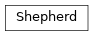

cxworker.shepherd¶Shepherd:
Manages creation and access to a configured set of sheepcxworker.shepherd.Shepherd(sheep_config, data_root, minio, registry_config=None)[source]¶Bases: object
Manages creation and access to a configured set of sheep
__getitem__(sheep_id)[source]¶Get the sheep with the given sheep_id.
| Parameters: | sheep_id (str) – sheep id |
|---|---|
| Return type: | BaseSheep |
| Returns: | sheep with the given sheep_id |
| Raises: | UnknownSheepError – if the given sheep_id is not known to this shepherd |
__init__(sheep_config, data_root, minio, registry_config=None)[source]¶Create mighty Shepherd.
| Parameters: |
|---|
dequeue_and_feed_jobs(sheep_id)[source]¶De-queue jobs, prepare working directories and send InputMessage to the specified sheep in an end-less
loop.
| Parameters: | sheep_id (str) – sheep id to be fed |
|---|---|
| Return type: | None |
enqueue_job(job_id, job_meta, sheep_id=None)[source]¶En-queue the given job for execution. If specified, use a certain sheep.
| Parameters: | |
|---|---|
| Return type: |
|
get_status()[source]¶Get status information for all sheep
| Return type: | Generator[Tuple[str, SheepModel], None, None] |
|---|---|
| Returns: | a generator of status information |
health_check(sheep_id)[source]¶Periodically check if the specified sheep is running and resolve its in-progress jobs if not.
| Parameters: | sheep_id (str) – id of the sheep to be checked |
|---|---|
| Return type: | None |
is_job_done(job_id)[source]¶Check if the specified job is already done.
| Parameters: | job_id (str) – id of the job to be checked |
|---|---|
| Raises: | UnknownJobError – if the job is not ready nor it is known to this shepherd |
| Return type: | bool |
| Returns: | job ready flag |
listen()[source]¶Poll the sheep output sockets, process sheep outputs and clean-up working directories in an end-less loop.
| Return type: | None |
|---|